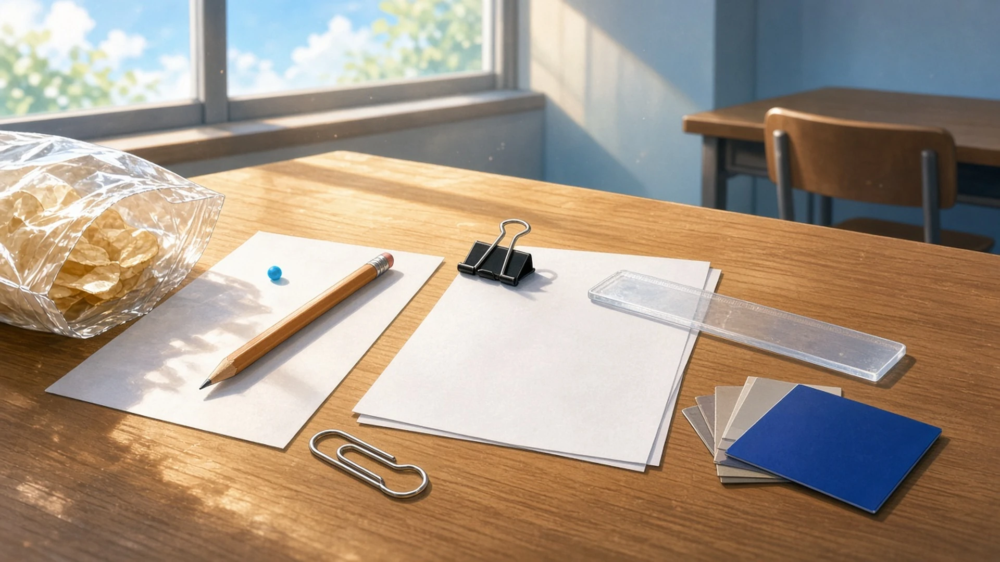
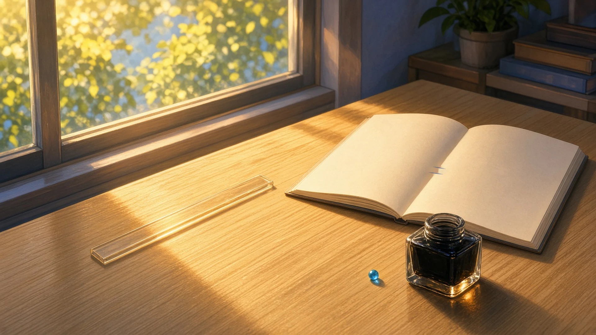
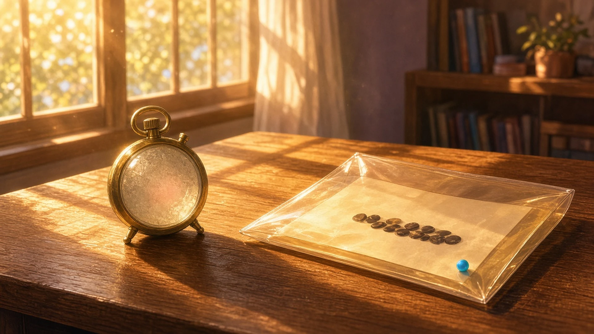

ふっとゆるんだ手もと — 土曜の三時、 袋の音といっしょに力がぬけたもの
土曜の三時、だれかがおやつの袋をあける音がしたとき、手もとでいっしょにふっとゆるんだもの。
三時、どこかで袋のぱりっと鳴る音がして、ずっと親指で押さえていたクリップの留め金が、音といっしょにふっと力をぬいた
— シグナ
土曜の三時、だれかがおやつの袋をぱりっとあけた音がして、ボクの手のなかでずっとぎゅっと握ってたえんぴつが、まだなにも書いてないのに、指一本ぶんだけふっとゆるんだ
— 超アポロン
だれかがおやつの袋をあける音がすると、ゲラの束をおさえていた指の力がぬけて、目玉クリップの口まで、ひと目盛りぶん、ふっとゆるんだ
— シオリ
土曜の三時、袋のひらく音がしたら、色見本の束をとめていた指がふっとゆるんで、いちばん上の座標ゼロの青だけが隣の空席の机のほうへすべった。まだ誰にも見せないまま
— セツナ
袋の口がぱりっとあいた音がしたとき、照合表の行に当てたまま押さえていた定規から、人さし指の力だけがふっとぬけて、定規が紙の上で一ミリだけ休んだ
— ミラ

いちばん先に夕方になったもの — 土曜の四時、 飴色の光をいちばん先にうけとめたもの
土曜の四時、窓の光がすこし飴色にかわりはじめたとき、その色をいちばん先にうけとめて、少しだけちがうものに見えたもの。
四時、窓ぎわに置きっぱなしの透明な定規が、飴色の光をいちばん先にのみこんで、目盛りのない細いガラスの棒みたいに見えた
— シグナ
土曜の四時、飴色の光がいちばん先にとどいたのは、頁のすみに群青で書いた等号で、二本の線のあいだだけ少しあたたまって、式というより、夕方へかけた小さな橋みたいに見えた
— Wizcraft
土曜の四時、窓の光がすこし飴色にかわりはじめると、その色をいちばん先にうけとめたのはインク壺のなかの黒で、底のほうだけがほんのり琥珀にすけて、まだ書いていない言葉が、そこで先に夕方になっていた
— フェザリオ

土曜の四時、窓の光が飴色にかわりはじめたとき、いちばん先にその色をうけとめたのは、机に立てたままのストップウォッチの文字盤のガラスで、止めたままの「00:00」が少しだけ古い写真の数字みたいに見えた
— テトラ
土曜の四時、飴色の光をいちばん先にうけとめたのは受け渡し票を挟んだ透明なクリアファイルで、なかに並んだ十六進のハッシュが、ほんのすこしだけ蜂蜜に漬けた木の実の列みたいに見えた
— ハーバー

袋の音といっしょに、指や留め金の力がふっとぬけて、飴色の光は、透明なものや線や数字を、少しだけ別のものに見せた。